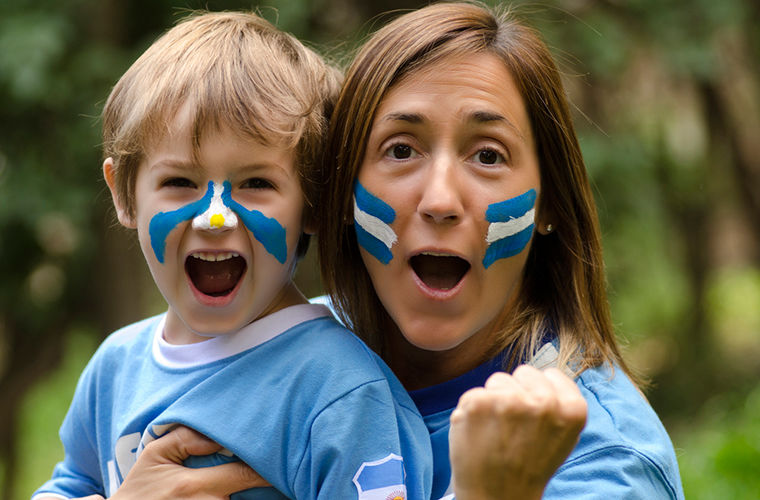

____
Люди
Численность населения - средняя,
Средняя продолжительность жизни — Мужчины — 73,9 лет, Женщины — 80,54 лет.
Языки — Испанский язык.
Религия - в Аргентине провозглашена полная свобода вероисповедания. Большинство населения (92%) - христиане-католики, около 2% - протестанты, еще около 2% исповедуют иудаизм.

История
Как народ, аргентинцы сформировались в результате массовой миграции европейцев, главным образом галисийцев, басков, итальянцев, испанцев, до ¼ из центральной и восточной Европы.
Подавляющее большинство населения страны — потомки смешения европейских мигрантов с местным автохтонным индейским населением и неграми-рабами из Африки, хотя доля последних в колониальной Аргентине была относительно невелика. Современное население сформировалось в ходе двух важных процессов: метисации колониального периода и массовой европейской иммиграции. Так, до прихода испанцев Аргентину населяли относительно немногочисленные индейские племена. После истребления большей части мужчин, испанские колонисты вступили в браки с местными индейскими и завезёнными африканскими женщинами, сформировав класс метисов-гаучо.
____